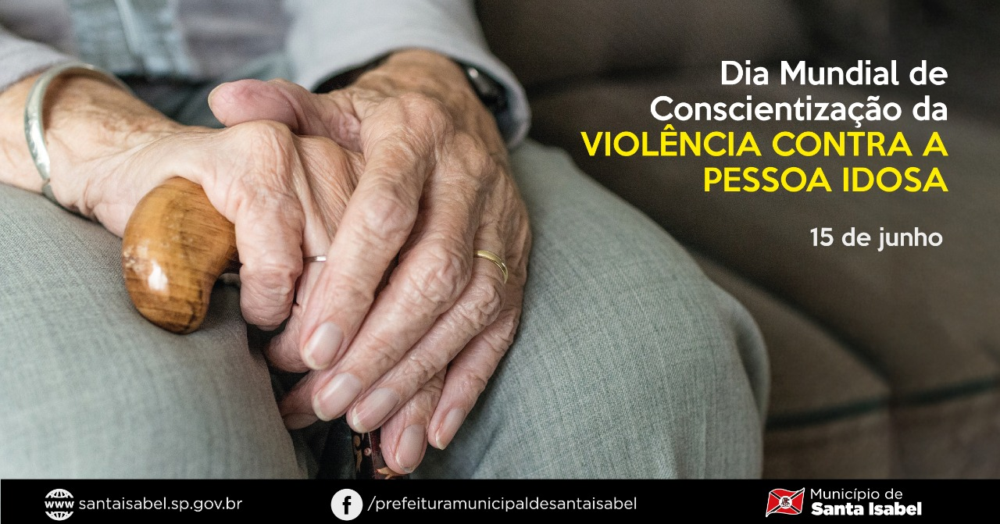
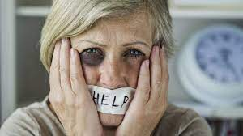
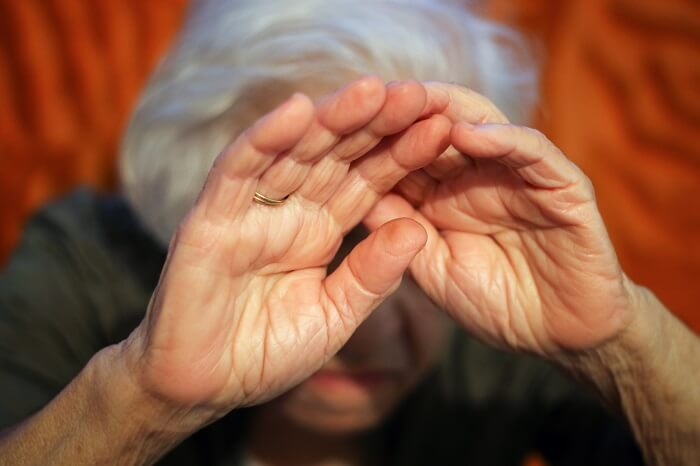

18 maio, 2023
O Dia Mundial da Consciencialização da Violência contra a Pessoa Idosa tem lugar a 15 de junho
A data foi criada em 2006 pelas Nações Unidas e pela Rede Internacional de Prevenção à Violência à Pessoa Idosa, tendo como objetivos refletir numa questão social sensível e acabar com a violência contra a pessoa idosa.
Numa sociedade cada vez mais envelhecida (serão 1,2 mil milhões de pessoas com mais de 60 anos em 2025), os idosos são esquecidos e sujeitos a maus-tratos físicos e psicológicos, quer pelas suas famílias, quer pelos serviços de acolhimento ou pela sociedade em geral.

25 maio, 2023
Violência contra idosos: mulheres são as maiores vítimas e filhos os principais agressores
A Centra Judicial do Idoso - CJI atendeu, durante o ano de 2019, a 192 casos de violência, sendo que em 115 deles a vítima era do sexo feminino e, em 124, os agressores eram os próprios filhos.
Os tipos de violência mais comuns foram a psicológica, a negligência e a financeira. Muitas vezes, em uma mesma denúncia, ocorre mais de um tipo de violência. Assim, houve um total de 272 registros de violência para os 192 acolhimentos de 2019.

23 março, 2023
É possível prevenir situações de risco de violência contra o idoso?
Uma das formas de prevenção de situações de violência e maus tratos é fortalecer os vínculos da pessoa idosa, para tanto ressaltamos a importância do Serviço Único de Assistência Social (SUAS) que visa contribuir para o desenvolvimento das potencialidades e das capacidades dos usuários, o fortalecimento das relações no âmbito da família e da comunidade e a ampliação das redes do acesso a direitos socioassistenciais.
Outra forma de prevenção é através da conscientização sobre os diversos tipos de violência, pois assim, a sociedade passa a reconhecer casos de violação de direitos para com o outro e para consigo e se torna capaz de realizar ações de prevenção e combate mais eficazes.